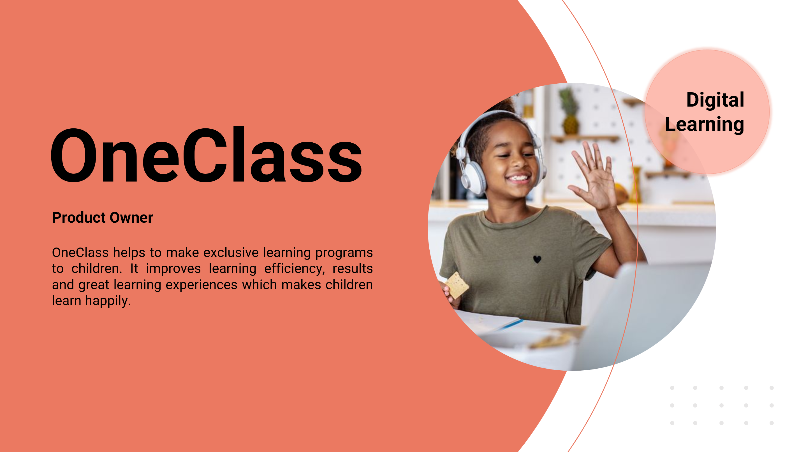
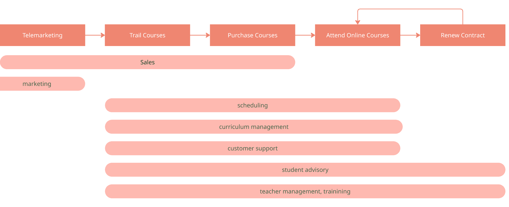
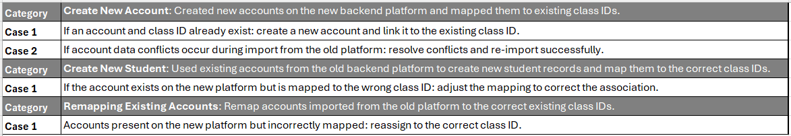
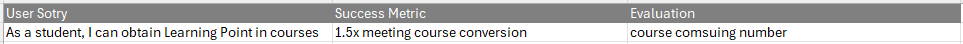
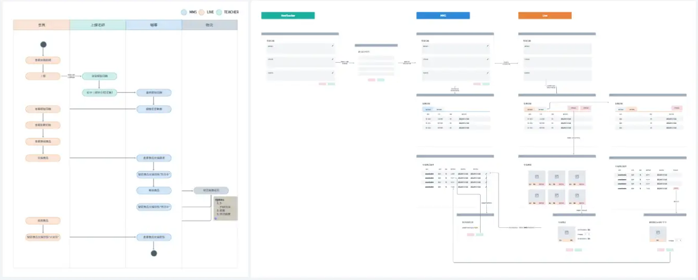
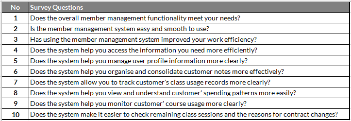
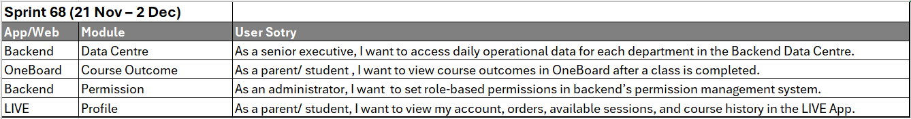
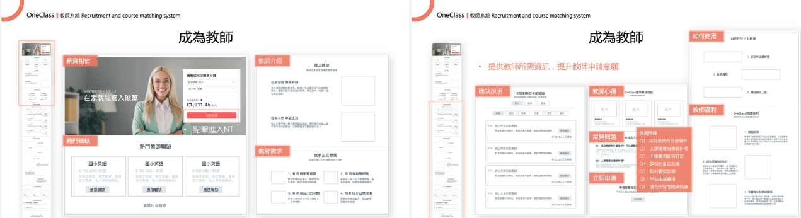

When I joined OneClass, the company was in a rapid growth phase. Backed by one of Taiwan’s top three educational publishers, Nani Book Enterprise, the digital learning platform served a large ecosystem of schools, tutoring centers, and individual learners.
I was responsible for rebuilding and optimising the core administrative platform that supported the company’s operations. I conducted market research, defined the product roadmap, and aligned cross-functional stakeholders to deliver the core backend platform on time and with high quality. My work improving user acquisition led to my promotion to Product Owner.
A major part of my role was workflow transformation. I worked closely with stakeholders across eight operational sectors, including sales, marketing, customer support, scheduling, student advisory, teacher management, teacher taining, and curriculum management, to understand their goals and processes. Many workflows were previously handled manually or offline. By designing automated workflows and integrated systems, teams were able to collaborate far more efficiently.

Beyond product planning, I was actively involved in technical discussions and architectural decisions. To address legacy system challenges and improve scalability, I collaborated closely with engineering leadership to refactor user profile data structures, migrating fragmented data from offline Excel files and legacy databases into a unified and scalable system.

After removing operational blockers for the sales team by optimising the previous workflow,
sales representatives were able to focus more on business development. While maintaining regular
delivery through our sprint cycles, I conducted market and user research to explore gamification features
aimed at improving course conversion.
I interviewed active students and parents and gathered insights from
the customer service team to understand user motivations and engagement patterns. Based on these insights,
I developed hypotheses and delivered a gamification MVP - Learning Point.

We conducted A/B testing to evaluate whether the improved course experience increased students’ willingness to
attend classes. During the tests, participants were encouraged to think aloud and share their reactions while
interacting with the course features. With the improved experience, 75% of students indicated they were more
willing to attend classes than before.
After validating that we were moving in the right direction, we iterated
on the MVP to introduce virtual currency value through a point-based reward store. Following further adjustments,
we ran another round of A/B testing, which validated our hypothesis and confirmed the
viability of the concept. I then began planning the Learning Point product, designing the workflows and
wireframes to support full implementation.

After the implementation, we integrated Google Analytics into the backend platform to track usage metrics
and user behavior. This enabled us to analyse how frequently different teams used specific functionalities
across sectors. The data provided quantitative insights that informed product planning, feature optimisation,
and backlog prioritisation.
I also conducted user surveys across eight operational sectors to gather feedback
from frontline staff. The insights were categorised and translated into a structured product backlog, enabling
us to prioritise features that addressed real operational challenges.

Throughout the development process, we adopted Agile methodology to manage the product lifecycle.
I facilitated daily stand-ups with engineers, designers, and QA engineers to track progress and address blockers.
After preparing PRDs, including user stories, specifications, and acceptance criteria, I led kickoff meetings to
align on technical feasibility, scope, and delivery timelines.
I also hosted sprint reviews and retrospective
meetings to demonstrate new features, gather feedback, and continuously improve team workflows. This process
ensured that the team stayed aligned with product goals and maintained high efficiency throughout development.

After moving to the UK in March 2023, I continued leading stakeholder interviews and product planning for the
teacher recruitment, student matching, and payroll systems. I developed a comprehensive proposal that included
pain point analysis, competitor research, product goals, optimised workflows, detailed wireframes, product roadmap and development scope.
The proposal was presented to key stakeholders and received alignment for implementation, marking the final
product initiative I led during my time at OneClass.
